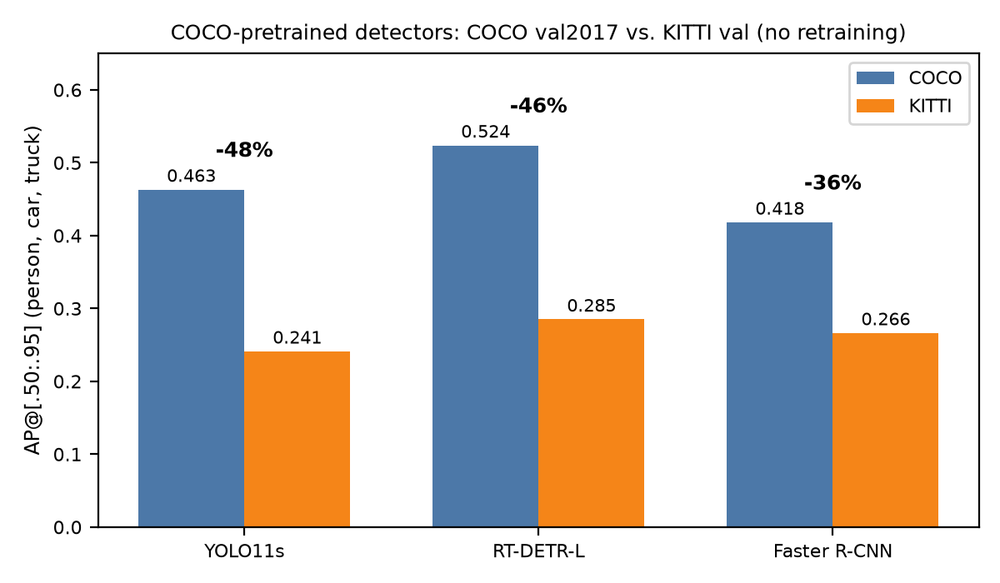
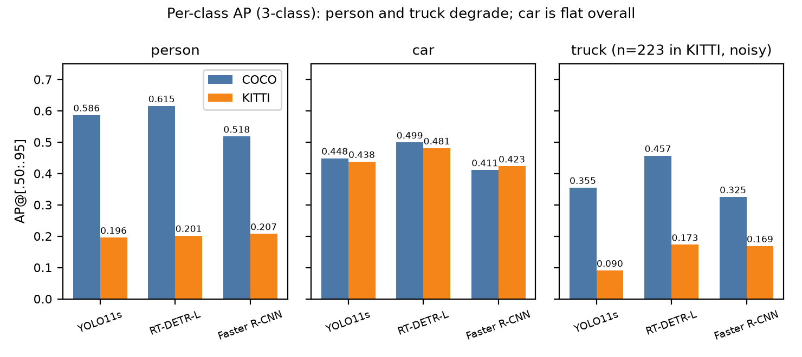
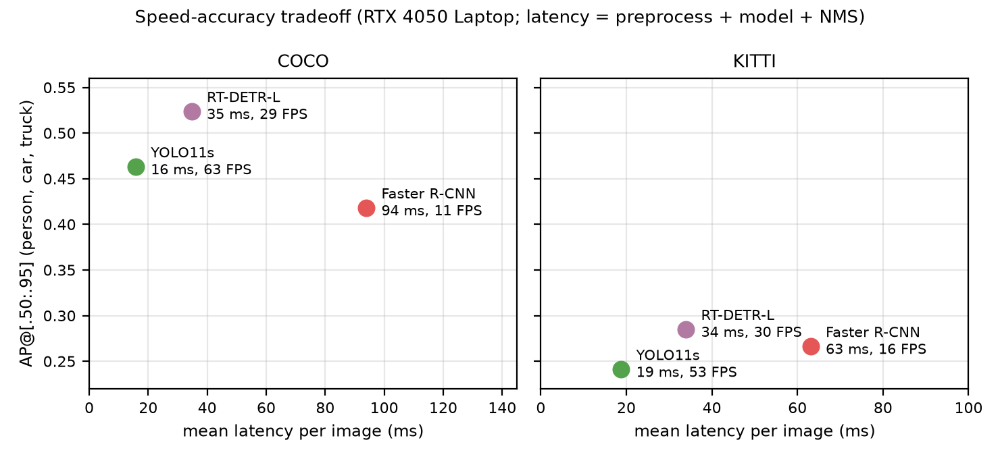
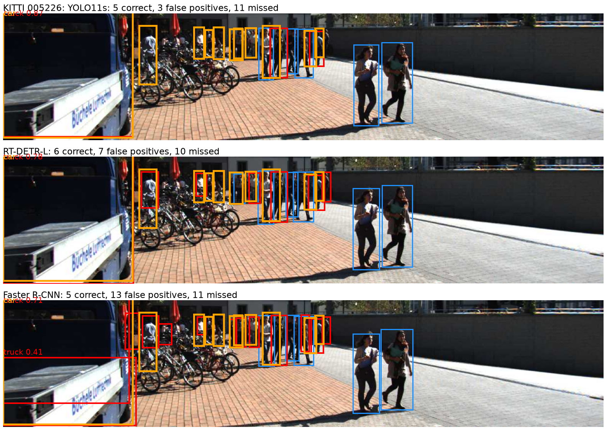
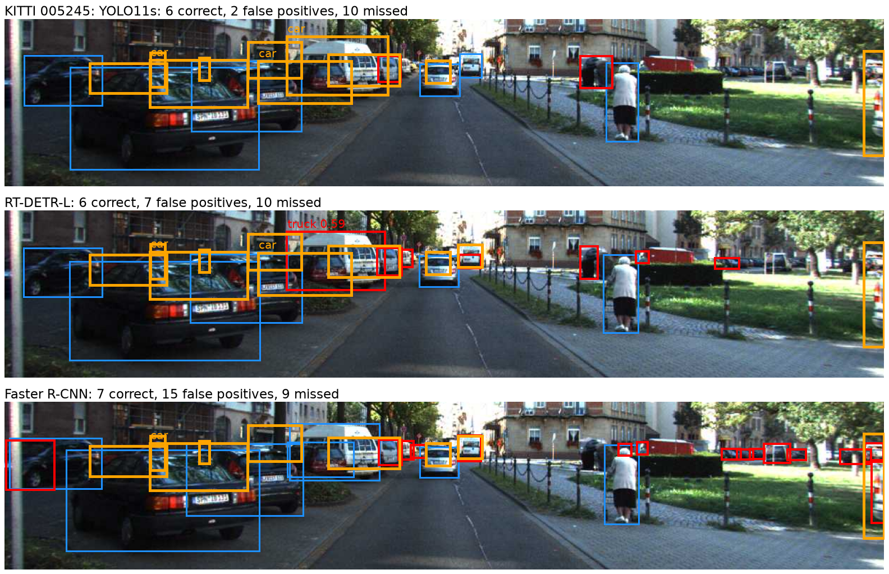
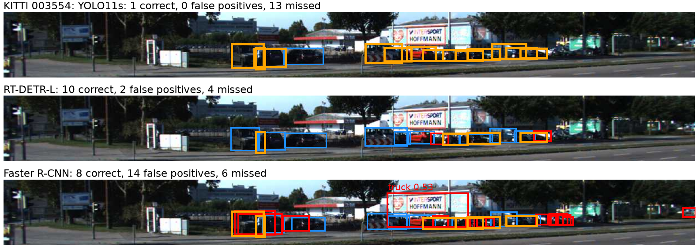
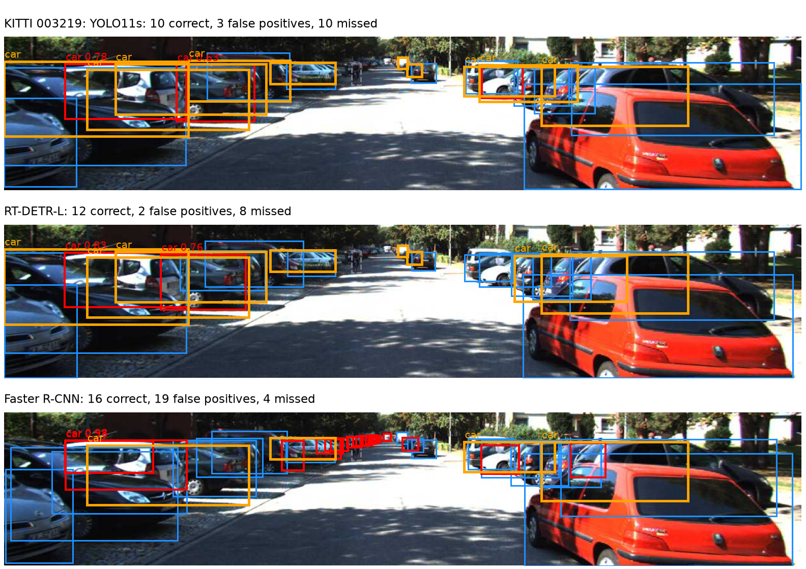
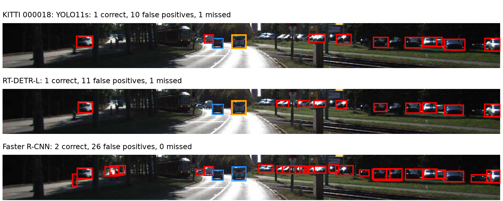
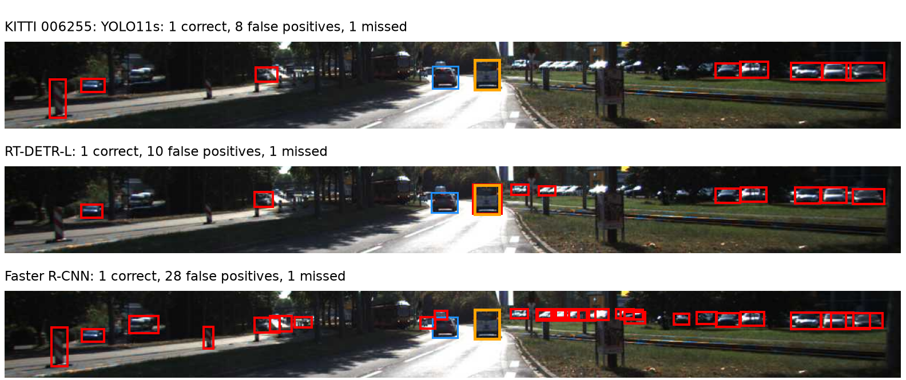

I ask how well three COCO-pretrained detectors from different architecture families transfer to KITTI driving scenes without retraining, and what each costs in speed and memory. I evaluate YOLO11s, RT-DETR-L and Faster R-CNN R50-FPN on COCO val2017 and the KITTI val split, restricted to the three classes both datasets share (person, car, truck), and score every run with pycocotools. The two analyses are cross-dataset generalization (Section 5) and the speed-accuracy trade-off with a short architecture discussion (Section 6); Section 7 is a failure analysis. Every number below is computed from files in the repository; docs/claims_ledger.md lists each claim with its source file and a status (measured, derived, hypothesis or unverified), and I label statements as measured or hypothesis in the text. AP values are fractions with three decimals.
Table 1 lists the models, Table 2 the datasets (COCO [1]; KITTI [2], [3], [15]) and Table 3 the KITTI-to-COCO label mapping used to compare them.
results/params/model_params.json. YOLO11 has no paper; its documentation is the citation [10]. Architecture references: [4]–[9].| Model | Family / design | Checkpoint | Params (M) | NMS | Input handling |
|---|---|---|---|---|---|
| YOLO11s | single-stage CNN, anchor-free | yolo11s.pt (Ultralytics) | 9.46 | yes (IoU 0.7) | imgsz 640, letterboxed |
| RT-DETR-L | transformer: hybrid encoder + query decoder | rtdetr-l.pt (Ultralytics) | 32.97 | none | imgsz 640, letterboxed |
| Faster R-CNN R50-FPN | two-stage, anchor-based (RPN + RoI head) | torchvision COCO_V1 | 41.76 | yes (IoU 0.5) | internal resize, min side 800 / max side 1333 |
scripts/convert_kitti_to_coco.py.| Dataset | Split | Images | Objects scored (person / car / truck) | Notes |
|---|---|---|---|---|
| COCO | val2017 | 5000 | 13109 total (non-crowd) | 80 classes; 3 shared classes used for comparison |
| KITTI | val (Ultralytics repackaging) | 1496 | 921 / 6271 / 223 (+388 ignore regions) | converted to COCO format, COCO category ids |
| KITTI class | Mapped to | Reason |
|---|---|---|
| car | car (3) | direct match |
| van | car (3) | COCO has no van class |
| truck | truck (8) | direct match |
| pedestrian | person (1) | direct match |
| person_sitting | person (1), ignore region (iscrowd=1) | not scored: neither a hit nor a false positive |
| cyclist | person (1), ignore region (iscrowd=1) | box covers rider plus bike, but COCO models predict person and bicycle separately; scoring it would create artificial false positives |
| tram, misc | dropped | no matching class among the three scored |
Hardware and software. NVIDIA GeForce RTX 4050 Laptop GPU (6 GB VRAM, 45 W power cap, driver 610.60), 15.3 GB RAM, Windows 11 (Git Bash). Python 3.12.10, torch 2.6.0+cu124, torchvision 0.21.0+cu124, ultralytics 8.4.198, pycocotools 2.0.11, numpy 2.5.4. These come from the hardware and versions fields stored in every result file.
Protocol. YOLO11s and RT-DETR-L run through the Ultralytics package [12], Faster R-CNN through torchvision [13], and all predictions are scored with pycocotools [14]. Confidence threshold 0.001 and at most 100 detections per image for all models, so that AP is computed over the full precision-recall curve. NMS IoU is 0.7 for YOLO11s, 0.5 for Faster R-CNN, and none for RT-DETR-L. YOLO11s and RT-DETR-L run at imgsz 640 (letterboxed); Faster R-CNN uses torchvision's internal resize (min side 800, max side 1333), so the models see KITTI at different scales (Section 5.5). Ultralytics class ids 0–79 are mapped to COCO ids with COCO80_TO_91. Latency is the mean time per image of preprocessing + model + NMS + copy to CPU, measured after 10 warmup images with CUDA synchronization; image decoding is not timed. Peak memory is torch.cuda.max_memory_allocated (tensor allocations only, excluding the CUDA context). Because the GPU is a power-limited laptop part, I treat latency differences under about 20% as noise.
Reproduction and evidence. Each results/<model>_<dataset>.json stores the metrics, latency, memory, configuration, versions, hardware and the exact command that produced it; COMMANDS.md lists all commands in order, and the code is in scripts/ of the repository above. Raw detections (large) and datasets are kept outside the repository. A 50-image smoke test is excluded from all results. No training was done, so the KITTI val split carries no leakage concern.
Sanity check. Table 4 compares my 80-class COCO AP with the published values. All three agree within 0.015 AP, which I take as evidence that the label mapping and scoring pipeline are correct. YOLO11s has the largest gap (-0.015); a possible cause is that my per-image predict settings differ from the vendor's validation settings (hypothesis, not tested). The published YOLO11s page does not name the split [10].
| Model | Measured AP (80 classes) | Published AP | Difference | Published source |
|---|---|---|---|---|
| YOLO11s | 0.455 | 0.470 | -0.015 | [10] |
| RT-DETR-L | 0.526 | 0.530 | -0.004 | [11] |
| Faster R-CNN | 0.372 | 0.370 | +0.002 | [13] (weights metadata) |
Main results. Table 5 gives the 3-class results and Table 6 the cost. Figure 1 shows the headline result: every detector loses a large share of its AP on KITTI.
| Model | Data | AP | AP50 | AP75 | APs | APm | APl | AR100 | AP person | AP car | AP truck |
|---|---|---|---|---|---|---|---|---|---|---|---|
| YOLO11s | COCO | 0.463 | 0.657 | 0.499 | 0.277 | 0.556 | 0.697 | 0.606 | 0.586 | 0.448 | 0.355 |
| YOLO11s | KITTI | 0.241 | 0.475 | 0.220 | 0.137 | 0.218 | 0.358 | 0.419 | 0.196 | 0.438 | 0.090 |
| RT-DETR-L | COCO | 0.524 | 0.744 | 0.561 | 0.339 | 0.611 | 0.753 | 0.694 | 0.615 | 0.499 | 0.457 |
| RT-DETR-L | KITTI | 0.285 | 0.531 | 0.269 | 0.222 | 0.272 | 0.404 | 0.535 | 0.201 | 0.481 | 0.173 |
| Faster R-CNN | COCO | 0.418 | 0.688 | 0.438 | 0.286 | 0.490 | 0.562 | 0.584 | 0.518 | 0.411 | 0.325 |
| Faster R-CNN | KITTI | 0.266 | 0.520 | 0.245 | 0.280 | 0.247 | 0.369 | 0.505 | 0.207 | 0.423 | 0.169 |
| YOLO11s, imgsz 1280 (resolution exp.) | KITTI | 0.262 | 0.497 | 0.245 | 0.215 | 0.245 | 0.355 | 0.457 | 0.197 | 0.458 | 0.131 |

| Model | Data | Input | Mean ms | Median ms | p95 ms | FPS | Peak GPU mem (GB) |
|---|---|---|---|---|---|---|---|
| YOLO11s | COCO | imgsz=640 | 15.79 | 14.24 | 24.4 | 63.3 | 0.126 |
| YOLO11s | KITTI | imgsz=640 | 18.8 | 15.59 | 34.17 | 53.2 | 0.087 |
| RT-DETR-L | COCO | imgsz=640 | 34.77 | 32.27 | 46.53 | 28.8 | 0.245 |
| RT-DETR-L | KITTI | imgsz=640 | 33.95 | 32.08 | 43.13 | 29.5 | 0.245 |
| Faster R-CNN | COCO | internal 800/1333 | 93.94 | 94.2 | 105.08 | 10.6 | 0.696 |
| Faster R-CNN | KITTI | internal 800/1333 | 63.09 | 62.61 | 67.38 | 15.9 | 0.452 |
5.1 Overall. Expected: a drop on a different domain, with the COCO ranking roughly preserved. Observed (derived): 3-class AP falls by 47.9% for YOLO11s, 45.6% for RT-DETR-L and 36.3% for Faster R-CNN (Figure 1), and the ranking changes: RT-DETR-L > YOLO11s > Faster R-CNN on COCO, but RT-DETR-L > Faster R-CNN > YOLO11s on KITTI. RT-DETR-L and Faster R-CNN differ by 0.019 AP on KITTI (0.285 vs 0.266); without confidence intervals I treat this as too close to call. The AP75/AP50 ratio also falls for all models on KITTI (0.76 → 0.46, 0.75 → 0.51, 0.64 → 0.47 for YOLO11s, RT-DETR-L, Faster R-CNN), so objects that pass IoU 0.5 are less often tight enough to pass 0.75 (measured); why is untested.
5.2 By class. Figure 2 shows that the drop is concentrated in two classes. Person AP changes by -66.7%, -67.3% and -60.0% and truck AP by -74.5%, -62.2% and -48.2% (YOLO11s, RT-DETR-L, Faster R-CNN), while car AP changes by only -2.4%, -3.7% and +2.9%. The truck numbers rest on 223 objects and are noisy; I did not test whether label-definition differences (for example vans merged into car) contribute.

5.3 By size and class × size. Table 7 separates class from size. At matched sizes car AP is lower on KITTI in 9 of 9 reliable cells, even though pooled car AP looks flat; the closest to flat is Faster R-CNN on large cars (0.564 vs 0.551, -2.4%). Person AP drops at every size, by 50% to 93% across models and sizes, and small KITTI persons score only 0.024–0.039 AP for all three models, so pedestrians fail at every size (a class-level problem, not only a size problem; measured).
| Class | Size | n COCO | n KITTI | YOLO11s | RT-DETR-L | Faster R-CNN |
|---|---|---|---|---|---|---|
| person | small | 4308 | 177 | 0.360 → 0.024 | 0.403 → 0.031 | 0.349 → 0.039 |
| person | medium | 3723 | 530 | 0.673 → 0.180 | 0.690 → 0.185 | 0.592 → 0.202 |
| person | large | 2746 | 214 | 0.811 → 0.333 | 0.830 → 0.345 | 0.675 → 0.337 |
| car | small | 1193 | 1042 | 0.322 → 0.265 | 0.384 → 0.332 | 0.321 → 0.254 |
| car | medium | 547 | 3344 | 0.639 → 0.405 | 0.660 → 0.448 | 0.556 → 0.404 |
| car | large | 178 | 1885 | 0.739 → 0.565 | 0.804 → 0.610 | 0.564 → 0.551 |
| truck | small† | 117 | 34 | 0.150 → 0.122 | 0.231 → 0.302 | 0.189 → 0.547 |
| truck | medium | 164 | 133 | 0.357 → 0.068 | 0.483 → 0.182 | 0.324 → 0.135 |
| truck | large | 133 | 56 | 0.540 → 0.176 | 0.626 → 0.257 | 0.446 → 0.219 |
5.4 Composition effect. The flat pooled car AP is consistent with a composition effect (hypothesis, not isolated by an experiment): 62% of COCO cars are small versus 17% of KITTI cars, and small objects have much lower AP. KITTI does not have more small objects than COCO in this 3-class view: person/car/truck are 43/34/23% small/medium/large on COCO and 17/54/29% on KITTI (measured). Pooled size AP therefore needs care: Faster R-CNN's pooled small-object AP is almost unchanged (0.286 → 0.280, -2.3%), but this is driven by 34 small KITTI trucks (small-truck AP 0.547 versus medium 0.135), which is noise. I therefore do not claim that Faster R-CNN is robust on small objects.
5.5 Resolution confound and the 1280 experiment. For the most common KITTI image size (1242×375), the 640 letterbox scales the image by 0.52, while Faster R-CNN's resize scales it by 1.07 (to about 1333×402), about 2.1× the linear scale (derived). This confounds any architecture-versus-architecture claim on KITTI. To test it for one model, I re-ran YOLO11s on KITTI at imgsz 1280: 3-class AP rose from 0.241 to 0.262 (+0.021, +8.7%) and small-object AP from 0.137 to 0.215. YOLO11s then trails RT-DETR-L by 0.023 AP and Faster R-CNN by only 0.004, within what I consider noise. So resolution explains part of YOLO11s' KITTI deficit relative to Faster R-CNN, but it does not close the gap to RT-DETR-L. I did not vary resolution for the other two models, and the 1280 latency (17.06 ms) is not comparable to the 640 runs; I do not interpret it.
Figure 3 plots AP against latency. Measured: YOLO11s is the fastest and smallest (63.3 FPS on COCO, 53.2 on KITTI, 0.126 GB peak). On COCO, RT-DETR-L has 2.2× YOLO11s' latency for +0.061 AP (+13.1%); on KITTI the AP gain is +0.044 (+18.2%) at 1.8× the latency. Faster R-CNN is the slowest (10.6 FPS on COCO, 15.9 on KITTI) and uses the most memory. RT-DETR-L is faster (2.7× on COCO, 1.9× on KITTI) and at least as accurate as Faster R-CNN on both datasets (+0.106 and +0.019 AP), although the KITTI AP gap is small (Section 5.1), so RT-DETR-L is the most balanced choice here and YOLO11s the choice if speed or memory dominate.

Latency across datasets. From COCO to KITTI the mean latency changes by +19% for YOLO11s, -2% for RT-DETR-L and -33% for Faster R-CNN (Table 6). Only Faster R-CNN's change is larger than my noise threshold; a plausible cause is fewer pixels after torchvision's resize on KITTI's wide, short images (hypothesis, untested). YOLO11s' small increase is unexplained, and RT-DETR-L's near-identical latency and memory on both datasets are consistent with its fixed 640×640 input (hypothesis).
Architecture discussion (hedged). YOLO11s is a single-stage, anchor-free CNN with NMS on the output; RT-DETR-L is query-based with a transformer decoder and needs no NMS [7][8]; Faster R-CNN is two-stage and anchor-based with an RPN and NMS [4][5][6]. The measurements are consistent with the usual expectation that the one-stage model is cheapest and the two-stage model costs the most per image. They do not isolate the cause of RT-DETR-L's better accuracy on both datasets: its checkpoint, parameter count (32.97 M vs 9.46 M for YOLO11s) and training recipe all differ from YOLO11s, so I cannot attribute the gap to the NMS-free design (hypothesis). Likewise the comparison with Faster R-CNN is confounded by input scale (Section 5.5).
I matched detections to ground truth at score ≥ 0.4 and IoU ≥ 0.5 (scripts/failure_analysis.py) and ranked KITTI images by misses common to all models (“missed by all”), by the spread in misses between models (“disagreement”), and by total false positives. I picked two of the four top images per category that make different points; the reasons are in figures/report/SELECTION.md. These are extreme cases by construction. Table 8 gives the corresponding overall miss rates: YOLO11s misses 55% of small objects versus 22% for Faster R-CNN, and trucks are missed most often by every model.
| Model | small | medium | large | person | car | truck |
|---|---|---|---|---|---|---|
| YOLO11s | 0.554 | 0.362 | 0.176 | 0.489 | 0.304 | 0.744 |
| RT-DETR-L | 0.297 | 0.243 | 0.153 | 0.403 | 0.191 | 0.471 |
| Faster R-CNN | 0.223 | 0.227 | 0.150 | 0.347 | 0.177 | 0.368 |
Figure 4 shows a vehicle labelled car that all models call truck and a crowd of small pedestrians that is mostly missed, consistent with a class-definition mismatch and small, overlapping people (the vehicle's original KITTI class is not visible in the image). Figure 5 shows overlap and truncation among parked cars. Figures 6 and 7 show where the models disagree: YOLO11s misses most distant cars that RT-DETR-L finds (Figure 6), and Faster R-CNN finds the most cars but adds many extra boxes (Figure 7), consistent with the higher input scale and miss-rate pattern in Table 8 (hypothesis). Figures 8 and 9 show false positives: many red car boxes sit on distant parked cars that appear real but unlabelled (the Ultralytics KITTI export has no DontCare regions), so KITTI AP may understate precision (hypothesis, from visual inspection only). The red person boxes in Figure 9 may be genuine errors; I cannot tell what the objects are at this size.

figures/report/); a crowd of small, overlapping pedestrians is mostly missed, while the two close pedestrians on the right are found by all. Matching at score ≥ 0.4 and IoU ≥ 0.5. Blue = correct, red = false positive (class and score), orange = missed ground truth, dashed gray = ignore region. Panels are cropped vertically to the band containing the boxes, and class/score labels are drawn only on large boxes; image chosen as an extreme case of its category, not a typical one, and some red boxes may be real but unlabelled objects.




AI assistants (Claude) were used to help write code and draft this report; I ran all experiments and reviewed all results.